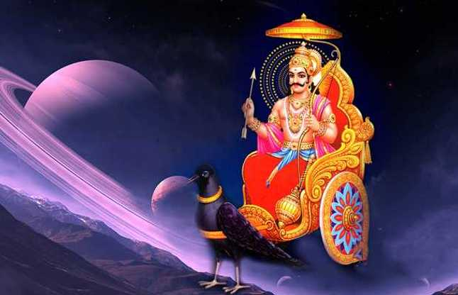

Shani Puja - Worship of Lord Shani (Saturn)
Shani Puja: Worship of Lord Shani (Saturn)
Shani Puja is a sacred Hindu ritual dedicated to Lord Shani, the planet Saturn. It is believed that performing this puja can alleviate the malefic effects of Shani's position in one's birth chart, and it is associated with the blessings of justice, discipline, and overcoming hardships.
What is Shani Puja?
Shani Puja is a ritual performed to worship Lord Shani, the planet Saturn. Shani is known as the planet of justice, discipline, and karma. He is often associated with challenges, obstacles, and life's hardships but also with the ability to bring strength and wisdom through those challenges. Worshipping Lord Shani helps alleviate the malefic effects of Shani's placement in one's astrological chart and promotes the energy of discipline, patience, and justice.
Why Do We Perform Shani Puja?
- Overcoming Hardships: Shani Puja is believed to help alleviate life's difficulties and challenges.
- Improvement in Career: Lord Shani is associated with discipline and hard work, helping to succeed in professional endeavors.
- Removal of Negative Influences: It is performed to neutralize the malefic effects of Shani in one's birth chart, reducing obstacles.
- Promoting Justice: Worshipping Shani is believed to bring fairness, equality, and justice in one’s life.
- Spiritual Growth: Shani Puja helps in developing a sense of discipline and inner strength, guiding one towards spiritual growth.
Benefits of Shani Puja
- Relieves Suffering: Helps alleviate the ill effects of Shani and reduces personal or professional suffering.
- Brings Discipline: Promotes discipline, patience, and a sense of responsibility.
- Boosts Career Success: Improves career prospects, especially for those facing challenges in the workplace.
- Promotes Longevity and Health: Provides physical and mental stability, improving health and longevity.
- Helps in Karmic Balance: Shani Puja helps individuals align themselves with the law of karma, resolving negative past actions.
How to Perform Shani Puja (Step-by-Step)
Shani Puja is typically performed on Saturdays, the day ruled by Lord Shani. Here's a step-by-step guide:
- Preparation: Choose a clean and quiet place to perform the puja. Gather materials such as black sesame seeds, a lamp, incense, flowers, and a black cloth or a picture of Lord Shani.
- Clean Yourself: Bathe and wear clean clothes, preferably dark colors like black or blue, to honor Lord Shani.
- Light the Lamp and Incense: Light a ghee lamp and incense to purify the surroundings.
- Offer Sesame Seeds: Offer black sesame seeds to Lord Shani as it is considered his favorite offering.
- Chant the Shani Mantra: Recite the Shani mantra, such as "Om Sham Shanicharaya Namah" or "Om Shani Devaya Namah" 108 times to invoke his blessings.
- Offer Flowers: Offer black or blue flowers to Lord Shani as a mark of respect and devotion.
- Perform Aarti: Perform the aarti by moving a lighted lamp in a circular motion around Lord Shani's image or idol.
- Prasad (Offering): Offer prasad (like fruits, sweets, or sesame-based offerings) and distribute it among family members or devotees.
- Conclude the Puja: End the puja with a prayer for relief from hardship and an invocation of Lord Shani's blessings for peace, prosperity, and health.
Conclusion
Shani Puja is a powerful ritual that helps alleviate hardships and promotes a sense of discipline, justice, and inner strength. By worshipping Lord Shani, individuals can neutralize the negative effects of Saturn in their lives and seek peace, prosperity, and spiritual growth. Performing this puja regularly brings the blessings of Lord Shani, helping to overcome obstacles and live a balanced life.